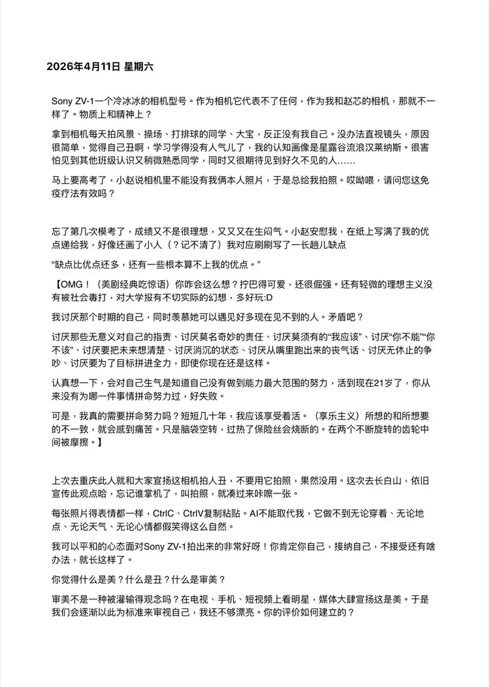

保留原话与语气，修正错字与分段。英文为网站译文。文中的判断与疑问保留写作当时的状态。Original voice retained, with light typo and paragraph corrections. The English is a website translation; judgements and questions reflect the time of writing.
Sony ZV-1 一个冷冰冰的相机型号。作为相机它代表不了任何，作为我和赵芯的相机，那就不一样了。物质上和精神上？Sony ZV-1: a cold camera model number. As a camera, it doesn’t stand for anything. As the camera belonging to Zhao Xin and me, it is different. Materially and emotionally?
拿到相机每天拍风景、操场、打排球的同学、大宝，反正没有我自己。没办法直视镜头，原因很简单，觉得自己丑啊，学习学得没有人气儿了，我的认知画像是星露谷流浪汉莱纳斯。很害怕见到其他班级认识又稍微熟悉的同学，同时又很期待见到好久不见的人……Once I got the camera, I photographed scenery, the sports field, classmates playing volleyball, and Dabao every day—just not myself. I couldn’t look straight into the lens. The reason was simple: I thought I was ugly, worn down by studying. In my head I looked like Linus from Stardew Valley. I was afraid of running into vaguely familiar students from other classes, while also looking forward to seeing people I hadn’t seen in ages…
马上高考了，小赵说相机里不能没有我俩本人照片，于是总给我拍照。哎呦喂，请问你这免疫疗法有效吗？The college entrance exam was coming. Xiao Zhao said the camera couldn’t have no pictures of the two of us, so she kept taking photographs of me. Well then—is this exposure therapy working?
上次去重庆此人就和大家宣扬这相机拍人丑，不要用它拍照，果然没用。这次去长白山，依旧宣传此观点哈，忘记谁掌机了，叫拍照，就凑过去咔嚓一张。On the last trip to Chongqing, I told everyone this camera made people look ugly and we shouldn’t use it. It was no use. On this trip to Changbai Mountain I was still making the same case, ha. I forget who had the camera. When someone called for a picture, I leaned in for a click.
每张照片肖像表情都一样，CtrlC、CtrlV 复制粘贴。AI 不能取代我，它做不到无论穿着、无论地点、无论天气、无论心情都假笑得这么自然。The expression in every photograph is identical. Ctrl-C, Ctrl-V. AI cannot replace me: it cannot fake a smile this naturally regardless of clothes, location, weather or mood.
你觉得什么是美？什么是丑？什么是审美？
审美不是一种被灌输的观念吗？在电视、手机、短视频上看明星，媒体大肆宣扬这是美。于是我们会逐渐以此为标准来审视自己，我还不够漂亮。你的评价如何建立的？What do you think beauty is? What is ugliness? What is taste?
Isn’t taste an idea we are taught? We see celebrities on television, on our phones and in short videos, while the media insist that this is beauty. Gradually we use it as a standard to judge ourselves: I’m still not beautiful enough. How was your judgement formed?
查看完整中文原稿View the complete Chinese manuscript ↗
